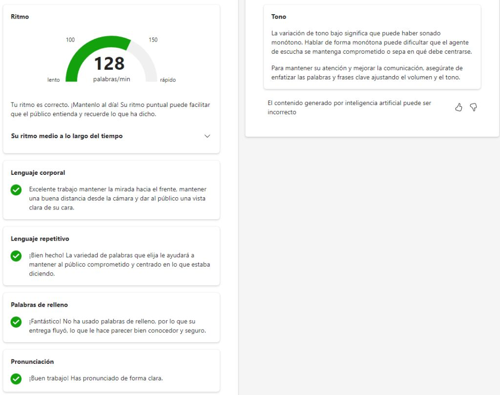
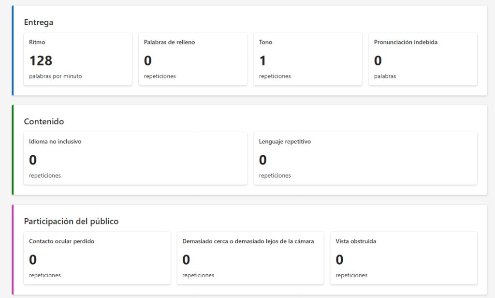

Estos días he estado probando los nuevos Learning Accelerators en MS Teams. Los Learning Accelerators de Microsoft son una categoría innovadora de herramientas integradas en Microsoft 365 Education, diseñadas para facilitar la creación, revisión y análisis de tareas a la vez que ofrecen al alumnado feedback en tiempo real. Esto podría convertirlas en una herramienta inclusiva e ideal para empoderar al alumnado.
Herramientas como Reading Progress y Speaker Progress se presentan como soluciones innovadoras para desarrollar competencias clave, pero ¿cómo de eficaces son en realidad? Tras probar ambas, está claro que, aunque aportan valor, también presentan retos importantes que limitan su impacto práctico.
Reading Progress
Reading Progress permite al profesorado asignar lecturas para que el alumnado las lea en voz alta y reciba informes automáticos que evalúan la precisión de la pronunciación, la expresión y la comprensión lectora. Su objetivo es reducir la carga de trabajo del profesorado y permitir que el alumnado mejore su pronunciación y comprensión, con la flexibilidad de repetir la lectura tantas veces como el profesor permita.
La principal limitación que noté es que los textos generados para ciertas edades parecen demasiado complejos; no creo que la IA ajuste bien el nivel de dificultad. A pesar de ello, Reading Progress es útil como herramienta complementaria: permite evaluaciones rápidas y a gran escala y ayuda a identificar al alumnado que pueda necesitar una atención más personalizada. De momento solo lo he probado yo, asumiendo los papeles de alumna y de profesora.
Speaker Progress
Después probé Speaker Progress, diseñado para ayudar al alumnado a desarrollar competencias de presentación y oratoria. Ofrece feedback automático sobre aspectos técnicos como el ritmo, las muletillas y la claridad del discurso. Como mi alumnado se preparaba para presentar nuestra empresa simulada, Riberpublic SLS, en una feria, les asigné una tarea con Speaker Coach para practicar su discurso de ventas.
Tras probarlo noté varias limitaciones importantes: no detecta cuándo el alumnado lee su discurso, no evalúa si miran a la cámara, y las evaluaciones generadas por la IA eran sistemáticamente muy positivas incluso cuando los discursos necesitaban mejorar mucho.
Aquí tienes un ejemplo de informe que Speaker Coach dio a uno de mis alumnos. Subió un vídeo solo con audio y claramente leía la mayor parte del texto, trabándose con las palabras y usando muletillas y lenguaje repetitivo… y aun así el informe fue muy optimista.


A pesar de estas limitaciones, Speaker Coach es un gran punto de partida para practicar la oratoria en un entorno de baja presión: el alumnado puede observarse y repetir la tarea hasta quedar satisfecho. Como alguien que odia hablar en público, me parecen muy útiles las herramientas que permiten practicar de antemano. Aun así, no puede sustituir la evaluación personalizada de un docente, y sus informes hoy por hoy no son fiables.
En conclusión, tanto Reading Progress como Speaker Coach tienen potencial para ayudar al profesorado y empoderar al alumnado, pero todavía presentan limitaciones notables. Con más desarrollo podrían volverse más valiosas; de momento conviene verlas como apoyos complementarios más que como soluciones integrales.